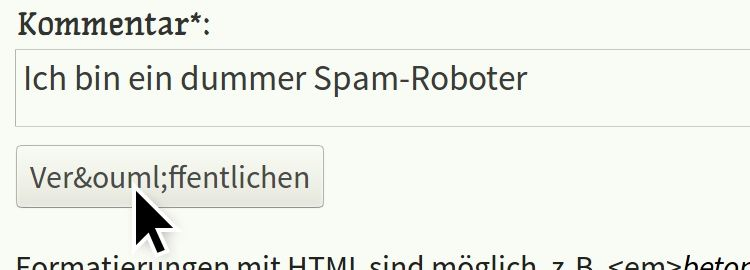

@charak
@charakKommentarspam verhindern
Etwa seit einem Vierteljahr bekomme ich in meinem Blog fast täglich Kommentare. Das würde mich sehr freuen, wenn es nicht unerwünschte Werbe-Einträge wären. Als Mail erhalte ich dann zum Beispiel folgenden Kommentar:
post_id: /sommerzeit
date:
name: Kredit-Heinz
link: http://kredit.tld/
comment: Toller Blogartikel, bitte schreib noch mehr zu diesem interessanten Thema. Für eine schnelle Geldspritze besuche <a href="http://kredit.tld/">unsere Kreditvergabe</a> und kassiere sofort! Jetzt auf <a href="http://kredit.tld/">http://kredit.tld/</a>
Solche Spamkommentare pflege ich in mein Blog gar nicht erst ein, sondern lösche sie direkt aus meinem Postausgang. Kürzlich ist mir aber etwas aufgefallen, dass mir die Arbeit in Zukunft erleichtern könnte. Normalerweise sieht eine Mail mit einem handgetippten Kommentar nämlich so aus:
post_id: /kommentarspam
date: 9.10.2018, 15:21:17
name: Jana Vogelsang
link: https://jana-bloggt.de/
comment: Das mit dem Kommentarspam kenne ich. Ich habe jetzt ein CAPTCHA eingefügt, seitdem bekomme ich keinen Spam mehr. Vielleicht ist das eine Lösung für dich?
Im Vergleich mit den Werbekommentaren sind mir zwei Unterschiede aufgefallen.
Werbespammer verwenden kein JavaScript
Zunächst steht im Spamkommentar kein Datum. Ich füge es nämlich automatisch mit der Programmiersprache JavaScript ein, wenn im Kommentarformular die Schaltfläche „Veröffentlichen“ angeklickt wird. Die Werbespammer scheinen JavaScript nicht auszuführen.
Theoretisch könnte ich also ein Script schreiben, so dass man nur kommentieren kann, wenn JavaScript aktiv ist. Ich könnte die Kommentareingabe zunächst unsichtbar machen und erst per JavaScript einblenden. Dann können Spammer das Feld gar nicht ausfüllen …
Praktisch hat JavaScript aber einen Haken: Es gibt nämlich Leute, die JavaScript absichtlich abgeschaltet haben. Sie haben möglicherweise Sicherheitsbedenken, möchten Web-Tracking einschränken oder verwenden einen Browser, der JavaScript nicht nutzt (z.B. LYNX). JavaScript wäre also auch eine Hürde für einige richtige Leser:innen.
Aus demselben Grund verzichte ich in meinem Kommentarformular übrigens auf sogenannte CAPTCHAs. Das sind kleine Zusatzaufgaben, die für Menschen recht einfach sein sollen, für Spamroboter aber schwierig lösbar sind; beispielsweise einfache Rechenaufgaben („Wie viel ist 2 + 5?“) oder ein Bild, in dem man Buchstaben erkennen soll. Ich möchte aber, dass es möglichst einfach ist, in meinem Blog seine Meinung zu äußern – ohne sich vorher mit einem bescheuerten CAPTCHA beschäftigen zu müssen.
Werbespammer verstehen keine HTML-Entitäten
Das zweite, was mir an den Spamkommentaren aufgefallen ist, war die (oben vor name). Das ist eine HTML-Entität (“HTML Entity”), eine spezielle Schreibweise, die normalerweise jeder Internetbrowser versteht und richtig interpretiert. Im Quelltext einer Website kann man bestimmte Sonderzeichen anders eingeben, damit sie nicht falsch dargestellt werden. Statt einem € kann man € schreiben, statt ä ein ä. Und weil ich wollte, dass in den Kommentarmails vor dem Namen eine Leerzeile steht, habe ich hier ein eingefügt: das Zeichen für eine leere Zeile.

Im Spamkommentar fehlt die Leerzeile und die HTML Entity bleibt stehen. Warum das so ist, weiß ich nicht genau. Ich vermute, für Werbekommentare werden kleine Programme verwendet, die das Internet automatisch nach Kommentarfeldern durchsuchen. Dann überfliegt das Programm die Namen der Textfelder, kopiert seine Werbenachricht hinein und schickt die Eingaben ab. Bei diesem Prozess kommt zu keiner Zeit ein richtiger Webbrowser zum Einsatz (wie Firefox, Safari, Opera oder Chrome) – der würde die HTML-Entitäten nämlich in die entsprechenden Sonderzeichen umwandeln.
Unkomplizierter, barrierefreier Spamschutz
Kann man diese Unfähigkeit der Spamroboter nicht als Abwehrtechnik gegen sie einsetzen? Wie sorge ich dafür, dass ein Kommentar nur abgeschickt werden kann, wenn HTML-Entitäten richtig interpretiert werden? Natürlich bringt es nichts, wie oben im Bild einfach den Text auf der Veröffentlichen-Schaltfläche zu ändern, ein Spamprogramm findet den Knopf trotzdem. Aber wie wäre es, den Werbekommentar einfach an eine falsche Adresse weiterzuleiten?
Mein Kommentarformular wird von dem Anbieter Onlex verarbeitet. Ich leite die Eingaben an eine Adresse wie https://www.onlex.de/_formmailer.php weiter und bekomme sie dann als Mail. Was, wenn ich die Adresse im Formular mit einer HTML-Entität spicke, zum Beispiel https://www.onlex.de/_formmailer.php? Das : ersetzt den Doppelpunkt, sollte von echten Browsern aber wieder zurückverwandelt werden. Ein Spamprogramm bekommt nach dem Abschicken seines Kommentars dagegen eine Fehlermeldung: Adresse nicht gefunden. So wird kein Kommentar verschickt und der Werbemüll landet im Nirgendwo.
Update 12. August 2018: Nachdem ich die Methode drei Wochen getestet hatte und es auffällig ruhig geworden war, scheint die Adressverschleierung seit vier Tagen nicht mehr zu funktionieren. Zwar stehen in der Kommentarmail immer noch HTML Entities, innerhalb der Absenderadresse können sie die Spammer aber wohl doch auflösen. Nun ja, dann bleiben die Spamkommentare halt im Mailfilter hängen.
Weiß jemand mehr über Spamroboter und HTML-Eintitäten? Auch ein einfacher Link zu weiteren Infos wäre hilfreich. Ich konnte nichts dazu finden, kann mir aber nicht vorstellen, dass noch niemand diese einfache Spambremse entdeckt hat. Oder gibt es normale Browser, bei denen mein Spamschutz Probleme verursacht? Freue mich über ergänzende Kommentare!
---
Rubrik(en): #methodik